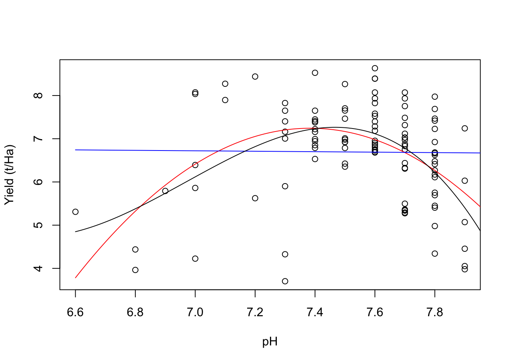
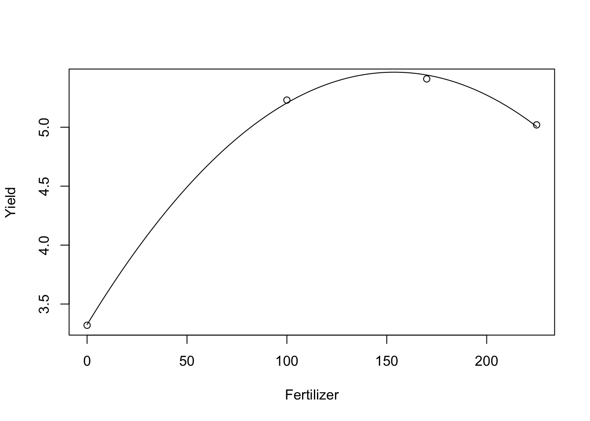
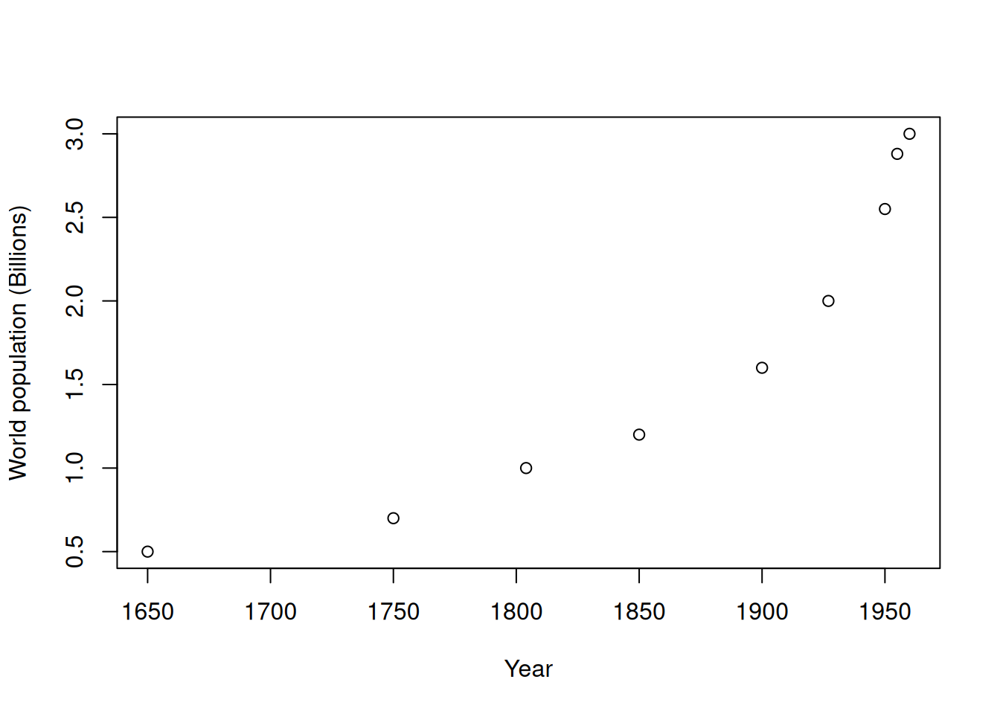
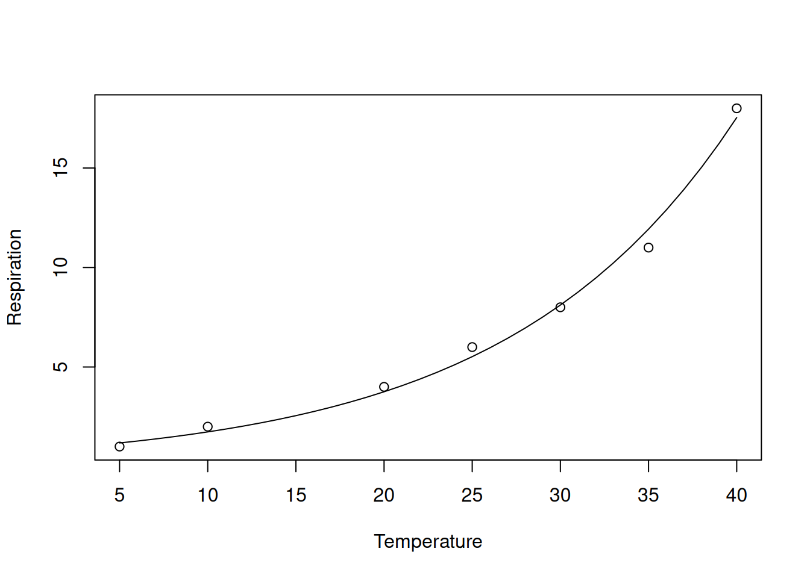

Learning outcomes
- Calculate “by hand” the initial estimates of the parameters of a non-linear model
- Interpret tables of regression coefficients for polynomials to perform hypothesis testing
- Fit polynomials and non-linear models to data using least-squares fitting using the SOLVER add-in in Excel
- Fit polynomials and non-linear models to data in R, and interpret the outputs
Before we begin
Create your Quarto document and save it as Lab-12.qmd or similar.
The following data files are required:
Over the past few weeks you have explored linear models and how to interpret model summary output. Again we have stepped up the complexity, now venturing into the world of non-linear models.
This practical focuses on fitting non-linear models to data with an emphasis on 3 important classes of functions that all budding biologists and environmental scientists should know
- polynomials,
- exponential models, and
- logistic models.
A question before we begin:
What are some advantages and disadvantages of non-linear models as compared to polynomials?
Polynomials
Quadratic
\(y = \beta_0 + \beta_1 x + \beta_2 x^2\)
where the parameters are the y-intercept (b0), the linear component (b1) and the quadratic component (b2).
If b2 is negative then the shape of the function is convex upwards, i.e. y increases with x until reaches a peak and then y decreases.
It is easy to understand so it has been commonly used for modelling the response of yield to inputs such as fertiliser, seeding rates. This is despite much criticism for being unrealistic.
Limitations:
rate of increase to peak is same as rate of decrease past peak
does not level off as x becomes small or very large, y just keeps increasing or decreasing.
Cubic
\(y = \beta_0 + \beta_1 x + \beta_2 x^2 + \beta_3 x^3\)
Compared to the quadratic model which has 1 turning point, a cubic model has 2 turning points.
Exercise 1: Interpreting polynomials
A study was performed to examine the soil properties that control the within-field variation in crop yield. The focus of this question is on soil pH which (among other things) controls the availability of nutrients to plants.
This exercise does not require you to read in any data, but rather focus on interpreting the model output and comparing the models.
The figure below shows the raw observations of yield plotted against pH with three models fitted; a linear model, quadratic polynomial and a cubic polynomial.
- which line corresponds to which model?
- based on the output from the 3 models below, which model fits the data best? Note: no hypothesis testing yet, just how well the model fits the data (R2).
- Linear model:
Call:
lm(formula = yield ~ ph, data = soil)
Residuals:
Min 1Q Median 3Q Max
-3.0027 -0.5540 0.2189 0.7643 1.9424
Coefficients:
Estimate Std. Error t value Pr(>|t|)
(Intercept) 7.08842 3.05279 2.322 0.0221 *
ph -0.05249 0.40438 -0.130 0.8970
---
Signif. codes: 0 '***' 0.001 '**' 0.01 '*' 0.05 '.' 0.1 ' ' 1
Residual standard error: 1.137 on 108 degrees of freedom
Multiple R-squared: 0.000156, Adjusted R-squared: -0.009102
F-statistic: 0.01685 on 1 and 108 DF, p-value: 0.897- Quadratic model:
Call:
lm(formula = yield ~ ph + I(ph^2), data = soil)
Residuals:
Min 1Q Median 3Q Max
-3.5010 -0.4380 -0.0099 0.5871 1.7064
Coefficients:
Estimate Std. Error t value Pr(>|t|)
(Intercept) -299.9031 54.2430 -5.529 2.30e-07 ***
ph 83.1948 14.6954 5.661 1.27e-07 ***
I(ph^2) -5.6336 0.9942 -5.667 1.24e-07 ***
---
Signif. codes: 0 '***' 0.001 '**' 0.01 '*' 0.05 '.' 0.1 ' ' 1
Residual standard error: 1.002 on 107 degrees of freedom
Multiple R-squared: 0.2309, Adjusted R-squared: 0.2166
F-statistic: 16.07 on 2 and 107 DF, p-value: 7.921e-07- Cubic model:
Call:
lm(formula = yield ~ ph + I(ph^2) + I(ph^3), data = soil)
Residuals:
Min 1Q Median 3Q Max
-3.3734 -0.4540 0.0526 0.5171 1.9561
Coefficients:
Estimate Std. Error t value Pr(>|t|)
(Intercept) 1719.020 1082.451 1.588 0.1152
ph -745.066 443.767 -1.679 0.0961 .
I(ph^2) 107.461 60.570 1.774 0.0789 .
I(ph^3) -5.140 2.752 -1.867 0.0646 .
---
Signif. codes: 0 '***' 0.001 '**' 0.01 '*' 0.05 '.' 0.1 ' ' 1
Residual standard error: 0.9908 on 106 degrees of freedom
Multiple R-squared: 0.2554, Adjusted R-squared: 0.2344
F-statistic: 12.12 on 3 and 106 DF, p-value: 6.971e-07- Use the R output to perform hypothesis testing to find the best model. Write out the hypotheses you are testing.
Exercise 2: Fitting polynomials in R
This exercise will use real data from a yield-fertiliser trial in Bedfordshire, United Kingdom.
First thing we can do is fit a linear model to the fertiliser data:
# create fertiliser and yield objects
fert <- c(0, 100, 170, 225)
yield <- c(3.32, 5.23, 5.41, 5.02)
# Fits a linear model and saves it to an object called lin.mod
lin.mod <- lm(yield ~ fert)
# Summarises key features of model
summary(lin.mod)
Call:
lm(formula = yield ~ fert)
Residuals:
1 2 3 4
-0.4469 0.6727 0.2995 -0.5252
Coefficients:
Estimate Std. Error t value Pr(>|t|)
(Intercept) 3.766929 0.634765 5.934 0.0272 *
fert 0.007904 0.004243 1.863 0.2035
---
Signif. codes: 0 '***' 0.001 '**' 0.01 '*' 0.05 '.' 0.1 ' ' 1
Residual standard error: 0.7134 on 2 degrees of freedom
Multiple R-squared: 0.6344, Adjusted R-squared: 0.4515
F-statistic: 3.47 on 1 and 2 DF, p-value: 0.2035- What is the model fit like in this model?
Fit and plot a quadratic polynomial in R. In R a quadratic polynomial can be fitted using the following lines of code:
# create a new variable which is the square of the fertilizer rates
fert2 <- fert^2
# fit the quadratic model incorporating fert2
quad.mod <- lm(yield ~ fert + fert2)
summary(quad.mod)
Call:
lm(formula = yield ~ fert + fert2)
Residuals:
1 2 3 4
-0.005611 0.024528 -0.032791 0.013874
Coefficients:
Estimate Std. Error t value Pr(>|t|)
(Intercept) 3.326e+00 4.324e-02 76.92 0.00828 **
fert 2.786e-02 9.014e-04 30.91 0.02059 *
fert2 -9.064e-05 3.921e-06 -23.12 0.02752 *
---
Signif. codes: 0 '***' 0.001 '**' 0.01 '*' 0.05 '.' 0.1 ' ' 1
Residual standard error: 0.0436 on 1 degrees of freedom
Multiple R-squared: 0.9993, Adjusted R-squared: 0.998
F-statistic: 731.7 on 2 and 1 DF, p-value: 0.02613- What is the fit like for our quadratic model? is it better than our linear model?
In Excel it is easy to fit a line, by creating a scatterplot, then add Trendline… and selecting Polynomial (2nd order).
To fit our polynomial line in R, we need to obtain model predictions first.
To plot model predictions you first need to predict at fine intervals of the predictor to make a continuous plot that is not jagged or stepped. To create a new prediction dataset you can use the following code:
# creates a sequence of numbers from 0 to 225 going up in increments of 1
new.fert <- seq(0, 225, 1)We can use our model to predict at the values in the new prediction dataset, in this case new.fert.
new.pred <- predict(quad.mod, list(fert = new.fert, fert2 = new.fert^2))The general form of the predict function is predict(model object, list object).
The list object tells R what object contains the data we will use to predict. For example in our case the model was built on fert and fert2 so we have to tell the predict function what object contains the new values for each of these, in our case new.fert.
Now we plot the raw observation as points and add an overlay of the model fit as lines:
plot(fert, yield, xlab = "Fertilizer", ylab = "Yield")
lines(new.fert, new.pred) # Adds lines to original plot
Exponential function
\(y=y_0e^{kx}\)
where the parameters are y0 which is the multiplier which expresses the starting or final value, and k which is negative for exponential decay and positive for the exponential growth.
The half life (for decay) or doubling time (for growth) can be calculated as
\(\frac{log_e 2}{k}\)
Limitations:
harder to fit than polynomials
exponential growth has no horizontal asymptote; keeps going up.
Exercise 3: Initial estimates for exponential growth function
In this exercise we will find initial estimates of the parameters of an exponential growth model by visual assessment of plots of the data and/or rough calculations. The initial estimates of the parameters are needed as starting points for the iterative fitting methods we will use in the practicals, e.g. SOLVER in Excel and the nls() function in R.
The plot and table below presents the population of the world from 1650-1965.
We wish to model the data with an exponential growth function of the form;
\(y=y_0e^{kx}\)
where
y is the population in the year x,
y0 is the population in 1650 and
k is the rate constant.

| Year | 1650 | 1750 | 1804 | 1850 | 1900 | 1927 | 1950 | 1955 | 1960 |
| Pop (billions) | 0.5 | 0.7 | 1 | 1.2 | 1.6 | 2 | 2.55 | 2.88 | 3 |
- Provide an initial estimate of y0.
The parameter k can be estimated from a linear model fitted to loge population against year.
Rather than formally fitting a linear model you could estimate the slope approximately by using the smallest and largest value to estimate the slope and therefore k.
- Use this approach to estimate k.
Hint: \[ slope = k = \frac{log_e y_{max} - log_e y_{min}}{x_{max} - x_{min}} \]
- For an exponential growth model the doubling time of a population can be estimated by loge2 /k.
Examine the graph and/or table to estimate the doubling time and use this to estimate k. You will have to make k the subject in the equation for estimating the doubling time.
- How similar were the estimates of k?
Exercise 4 : Exponential growth models
This data is from Jenkins & Adams (2010) who studied soil respiration rates against temperature for different vegetation communities in the Snowy Mountains. They fitted an exponential growth model to the data.
The purpose of this exercise is to illustrate the dangers of using Excel’s in-built functions for statistics more complex than calculating means and fitting simple models.
Plot the data in Excel and using the Add Trendline… option. Make sure tick the option for displaying the equation in the graph.
- The researchers performed the experiment up to a temperature of 40 degrees C, would you expect exponential growth in the respiration rate to continue if high temperatures were considered? Is there a better model?
Now fit the same model in R using the nls function. Code to get you started is:
temp<-c(5,10,20,25,30,35,40)
respiration<-c(1,2,4,6,8,11,18)
##Initial parameters
exp.mod<-c(y0=1.0,k=0.1)
##Fits exponential model
res.exp<-nls(respiration ~ y0 * exp(k*temp), start=exp.mod,trace=T)2025.224 (3.23e+01): par = (1 0.1)
90.64319 (7.34e+00): par = (0.6559559 0.09162898)
2.841421 (9.49e-01): par = (0.7302258 0.08091595)
1.488431 (5.63e-02): par = (0.7944381 0.07731867)
1.483685 (1.52e-03): par = (0.8033809 0.07707711)
1.483681 (4.12e-05): par = (0.8036903 0.07706805)
1.483681 (1.68e-06): par = (0.8037011 0.07706768)##Summarise model
summary(res.exp)
Formula: respiration ~ y0 * exp(k * temp)
Parameters:
Estimate Std. Error t value Pr(>|t|)
y0 0.803701 0.118632 6.775 0.00107 **
k 0.077068 0.004048 19.037 7.37e-06 ***
---
Signif. codes: 0 '***' 0.001 '**' 0.01 '*' 0.05 '.' 0.1 ' ' 1
Residual standard error: 0.5447 on 5 degrees of freedom
Number of iterations to convergence: 6
Achieved convergence tolerance: 1.681e-06- Now you can fit a line to the plot. Does this look similar to your trendline in Excel?
#Plots raw data
plot(temp,respiration,xlab='Temperature',ylab='Respiration')
#Creates new dataset for predictions ( 5 to 40 at an interval of 1)
temp.new<-seq(5,40,1)
#Makes predictions onto temp.new
pred.exp<-predict(res.exp,list(temp=temp.new))
#Adds model fit to existing plots
lines (temp.new,pred.exp)
Compare the parameters values between Excel and R. You can extract the RSS value from an nls object by using the code below:
deviance(res.exp)[1] 1.483681- Calculate the RSS value for the Excel exponential model. Based on this, which is the better model?
When faced with the need to fit an exponential function, one approach that was used before computing power became readily accessible was to log the y values which linearises the relationship with x, enabling the modeller to use a simple linear model.
If we linearise, model would be \(log_e(y) = b_0 + b_1x\), where \(e^{b_0}\) is the y0 parameter in an exponential model, and b1 is the k parameter in the exponential model. This is similar to what was demonstrated in the lecture this week.
In Excel, log the soil respiration data and fit a linear model. You will see that the fitted model gives the same values as the exponential model fitted to the untransformed data.
If you compare the R2 values for both you will see they are the same. This means that Excel reports the R2 of the linear model fitted to logged respiration as the R2 of the exponential model fitted to the raw data. This is naughty of Excel.
For the dataset used here the exponential model fits it so well the Excel approach is only slightly different to the correct approach used in R.
In cases where the model does not fit the data so well the differences would be larger. Logarithm makes smaller values larger and larger values smaller.
WHY IS THIS SUB-OPTIMAL?
Regression modelling assumes that the residuals are normally distributed so logging normally distributed data will change the distribution to a non-normal one – it is best to analyse the data without transformation.
Modelling data on the logged scale reduces the impact that larger values have on minimising the RSS but when you plot the fitted model with the original data you may observe large discrepancies for larger values. In other words, using a linear model on the log(data) can result in a higher discrepancy for larger values when plotting the fitted model on the original data. Therefore, the model fitted to the logged data is not necessarily the best on the original data.
The reporting of the R-squared on the logged data on a model purported to be fitted to untransformed data is just wrong as the R-squared on the log scale will be better as the variation in the data has been reduced but we really want to know how well an exponential model fits the raw data.
Logistic function
There are several versions of the logistic function. We will use the following:
\[ y = \frac{Asym}{1+e^{\frac{xmid-x}{scal}}} \]
where
- \(Asym\) is the maximum value of \(y\) (upper limit, horizontal asymptote).
- \(xmid\) is the value of \(x\) when \(y\) is halfway between the lower and upper limits (inflection point, \(y = 0.5 \times Asym\)).
- \(scal\) is the rate of change: the rate at which \(y\) approaches the upper limit.
Commonly used to model growth that has a sigmoid shape, i.e. where growth is initially slow, then picks up to a maximum, then slows down again as the system reaches a maximum.
Limitations:
Harder to fit than polynomials.
Exercise 5: Logistic models
In this exercise you will model the yield of pasture over time (since sowing).
Note, we will assume the yield at sowing = 0 is 0 t/ha, which allows us to use the equation above (that is pre-defined in SSlogis()).
If this were not the case, we would need to use a slightly different equation; \(y = y_0 + \frac{Asym}{1+e^{-scal(x-xmid)}}\), where \(y_0\) is the yield at sowing.
- Fit the model in R using the
nlsfunction. Estimate the starting
parameters manually (using the previous exercise and the equation above as a guide). Then use theSSlogis()function to automatically estimate the parameters (see L12, Tut12 or the handbook).
- Plot the fitted model with the observations.
- Compare the final model parameters when we provide starting estimates, and when we use
SSlogis(). Are they the same?
STARTING VALUES
When fitting non-linear functions (i.e. logistic or exponential) using iterative procedures such as nls or SOLVER the starting estimates of the parameters need to be approximated. If the values are too far, the model will not run and return an error.
The best way to ensure that you have suitable starting values is to plot the data with the predictions overlaid for your starting parameters. You can then see how close your initial model is to the data.
The reason we go through the process of estimating parameters is because nls and SOLVER can fit any nonlinear equation. They are more versatile
Realistically, most nonlinear relationships you would fit are covered by a self-starting function; i.e. SSlogis(), SSasymp(), or nlraa::SSexpf(). These estimate the parameters for you and are more efficient to run. We recommend using these when suitable.
That’s it for Module 3! Great work exploring non-linear models!
Thank you all (students and demonstrators!) for your hard work and enthusiasm throughout this Module. Good luck with Project 3 and the final exam!